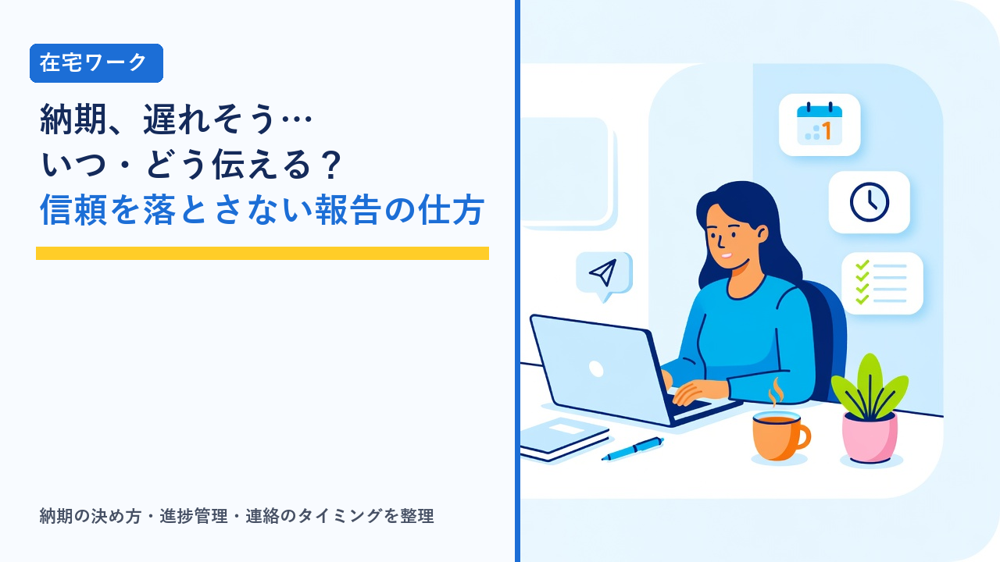

在宅ワークの納期管理と遅れそうなときの連絡：信頼を落とさない報告のタイミングと伝え方
2026-10-24 更新

在宅ワークやクラウドソーシングの案件では、作業の質と同じくらい「約束した日に納品できるか」が評価を左右します。発注者はワーカーの作業の様子を直接見られないため、納期を守るかどうかが、そのまま「この人に任せて大丈夫か」の判断材料になるからです。この記事では、納期の決め方から日々の進捗管理、そして体調不良や想定外の作業量で遅れそうになったときに、いつ・何を・どう伝えるべきかを客観的に整理します。
納期遅れが評価に直結する理由
会社勤めなら、進み具合は周囲が見ていて、遅れそうなときは自然に調整が入ります。在宅ワークではそれがなく、発注者にとってワーカーの状況は「納品物が届くか、届かないか」でしか見えません。納期が重視される背景には、次のような事情があります。
- 発注者側にも次の工程がある：記事の納品が遅れれば公開スケジュールが、データ入力が遅れれば集計や報告が後ろにずれます。ワーカーの1日の遅れが、発注者側では複数の人の予定変更につながることがあります。
- 評価・実績として記録される：クラウドソーシングサイトでは、納期を守ったかどうかが評価コメントや完了率として残り、次の受注に影響します。
- 契約上の約束である：業務委託では納期は契約条件の一部です。大幅な遅れは報酬の減額や契約解除の理由になりうることが、契約書や利用規約に書かれているのが一般的です。
- 連絡がないこと自体が不信感になる：遅れそのものより、「連絡がなく状況がわからない」ことのほうが、発注者の不安と不信感を大きくします。
契約や報酬の基本的な確認事項は在宅ワークで注意したいこと（契約・報酬・確定申告の基礎知識まとめ）で整理しています。
受注時の納期の決め方
納期管理の多くは、受注時にほぼ決まります。無理のある納期で受けてしまうと、その後の管理でどう頑張っても間に合いません。納期を決めるときに確認したい点を整理すると、次のようになります。
| 確認する項目 | 見るポイント | 見落としやすい点 |
|---|---|---|
| 作業時間の見積もり | 同種の作業にかかった時間を基準に、実作業時間を出す | 調べ物・確認・修正対応の時間を含めていない |
| 使える時間の把握 | 本業・家事・育児などを除いた、実際に作業に使える時間帯と日数 | 「毎日2時間できる」と見込んでも、実際は週に数日しか確保できない |
| 余裕（バッファ） | 見積もりに対して2〜3割程度の予備日を加える | 体調不良・PCトラブル・急な予定を想定していない |
| 納期の定義 | 「○日中」が何時までを指すか、初稿か修正込みの最終納品か | 自分は「夜中まで」と思い、発注者は「営業時間内」と考えている |
| 修正の回数と期間 | 修正依頼が来る時期と、修正にかかる時間 | 初稿納品で終わりと思い、修正期間に別案件を詰め込んでしまう |
| 確認待ちの時間 | 発注者からの資料提供や質問への回答にかかる日数 | 相手の返事を待つ時間が納期に含まれてしまう |
発注者から提示された納期が厳しいと感じる場合、受ける前に「この条件なら○日までであれば対応できます」と代替案を示すのが基本です。受けてから遅れるより、受ける前に調整するほうが、発注者にとっても負担が少なくなります。案件を受けすぎないための目安は在宅ワークで消耗しないための時間管理：案件の受けすぎを防ぐ目安と断り方で整理しています。
進捗を見える化する方法
「納期の前日に気づいたら間に合わなかった」という事態は、作業を分解して進み具合を日ごとに確認していれば、多くの場合もっと早い段階で予測できます。進捗管理の方法ごとの特徴を比較すると、次のようになります。
| 管理方法 | 向いている案件 | 特徴 | 注意点 |
|---|---|---|---|
| 手帳・紙のカレンダー | 案件数が少ない、単発中心 | すぐ始められ、一覧性が高い | 作業の細かい分解や、進み具合の数値管理には向かない |
| 表計算ソフト（スプレッドシート） | 件数の多いデータ入力・文字起こしなど | 「全体数・完了数・残り数・1日あたりの必要量」を自動計算できる | 記録を更新する習慣がないと、すぐ形だけになる |
| タスク管理アプリ | 複数案件を並行、工程が多いもの | 締切の通知、工程ごとの進捗、取引先別の整理ができる | 設定に手間がかかり、ツール管理自体が目的化しやすい |
| 発注者と共有する進捗表 | 長期・継続案件、チーム作業 | 発注者側でも状況がわかり、連絡の手間が減る | 更新が止まると、かえって「進んでいない」印象を与える |
どの方法でも共通する考え方は、作業を「1日単位で終わる大きさ」に分解し、計画と実績のずれを毎日確認することです。たとえば記事10本の案件なら「1日1本・10日間・予備2日」と置き、2日連続で計画に届かなければ、その時点で遅れの兆候として扱います。この「兆候の段階で気づく」ことが、次に説明する早めの連絡を可能にします。業務用のタスク管理ツールの特徴は在宅ワークで使う定番ツール比較：チャット・タスク管理・ファイル共有の選び方で整理しています。
遅れそうなときの連絡タイミング
納期遅れの連絡で最も重要なのは「いつ伝えるか」です。同じ1日の遅れでも、3日前に伝えるか当日に伝えるかで、発注者が取れる対応の幅はまったく変わります。状況の段階ごとに整理すると、次のようになります。
| 状況 | 連絡の目安 | 伝える内容 | 発注者が取れる対応 |
|---|---|---|---|
| 遅れの兆候が出た（計画より進みが悪い） | 気づいた時点で、納期の数日前まで | 現在の進み具合と、間に合わせる見込みがあるか | 優先順位の調整、分割納品の相談など選択肢が多い |
| 遅れることがほぼ確実になった | 確実になった時点ですぐ（遅くとも納期の前日まで） | 遅れる見込み、新しい納品可能日、理由、代替案 | 社内への事前共有、スケジュールの組み替え |
| 納期当日に間に合わないとわかった | その時点ですぐ。納期の時刻を過ぎる前に | 謝意、現状、いつなら納品できるか、途中成果の提出可否 | 限定的。緊急の代替手段を探すしかない |
| 納期を過ぎてしまった | 即時。連絡なく過ぎるのが最も避けたい状況 | 謝意、遅れた事実の確認、納品できる日時、再発防止の説明 | ほぼなし。信頼回復には継続的な実績が必要 |
共通する原則は、「間に合わないかもしれない」と思った時点で連絡することです。「頑張れば間に合うかもしれないので、ぎりぎりまで様子を見る」という判断は、結果的に遅れたときに発注者の対応余地を奪います。見込みの段階で状況を共有し、結果として間に合えば「予定通り納品できました」と報告すれば済みます。
遅れの報告に入れる5つの要素
遅れを伝えるメッセージは、感情より情報が優先です。発注者が次の判断をしやすいように、次の5つを短くまとめます。
- 結論（遅れる見込みであること）：最初に「○月○日の納期に間に合わない見込みです」と明記します。前置きが長いと、肝心の情報が埋もれます。
- 現状（どこまで終わっているか）：「全10本のうち7本は完成、残り3本が未着手」のように、数で示します。
- 新しい納品日：「○月○日○時までに納品できます」と、守れる日時を具体的に示します。ここで再び無理な日程を出すと、二度目の遅れにつながります。
- 理由（簡潔に）：体調不良、想定より作業量が多かった、確認待ちで止まっていた、など事実を1〜2文で。長い言い訳は逆効果です。
- 代替案と確認：「完成分を先に納品する」「分量を調整する」「優先する部分を指定してもらう」などの選択肢を示し、どれがよいかを確認します。
構成の例としては、「件名：【納期のご相談】○○案件の進捗について」→「結論」→「現状」→「新しい納品日」→「理由」→「代替案の提示と確認のお願い」→「お詫び」の順です。謝罪は必要ですが、謝罪だけで情報のないメッセージは、発注者にとって対応のしようがありません。
避けたい対応
遅れそうなときに、かえって信頼を失いやすい対応には共通点があります。
- 連絡せずに納期を過ぎる：最も避けたい対応です。「遅れた」こと以上に「状況がわからない」ことが、発注者の不信感を決定的にします。
- 連絡後に音信不通になる：遅れを伝えたあとで返信が途切れると、「本当に納品されるのか」という不安が残ります。進捗の節目で短く続報を入れます。
- 守れない再納期を提示する：気まずさから「明日中に」と答えて再び遅れると、評価は一度目の遅れ以上に下がります。確実に守れる日時を出します。
- 理由を長く説明しすぎる：事情を詳しく書くほど、言い訳に聞こえやすくなります。事実を簡潔に述べ、それより今後の見通しに文字数を使います。
- 品質を落として間に合わせる：納期は守れても、修正依頼が増えて結果的に時間も信頼も失いやすくなります。期限と品質のどちらを優先するかは、発注者に判断してもらうのが基本です。
- サイト外の連絡手段だけで済ませる：クラウドソーシングサイトの案件では、納期変更のやり取りはサイト内のメッセージに記録を残します。トラブル時の証拠になります。
クラウドソーシングサイトでは、納期や作業範囲が案件ページに明示され、納期変更のやり取りもメッセージ機能に記録として残るため、受注前の条件確認や遅れそうなときの相談を進めやすい環境になっています。初心者向けの案件も多く、短納期の単発案件から納期管理の練習を始められます。
選び方のポイント
- 納期は受注前に決める：作業時間の見積もりに調べ物・修正・確認待ちを含め、2〜3割の予備日を乗せたうえで、守れる日程を提示します。厳しい納期は受ける前に代替案を出します。
- 「○日中」の定義を確認する：時刻、初稿か最終納品か、修正の回数と期間を受注時に合わせておくと、認識のずれによる「遅れ」を防げます。
- 作業を1日単位に分解し、毎日ずれを確認する：手帳・表計算・タスク管理アプリのどれでもよいので、計画と実績の差が見える形にします。2日続けて遅れたら兆候として扱います。
- 「間に合わないかも」と思った時点で連絡する：早い連絡ほど発注者の選択肢が多く、結果として間に合えば報告だけで済みます。
- 報告は結論・現状・新納期・理由・代替案の順で：数で示し、謝罪より情報を優先します。再納期は確実に守れる日時にします。
- 記録が残る手段でやり取りする：サイト内メッセージや業務チャットなど、あとから確認できる場所に納期変更の合意を残します。
企業の制作チームや開発チームに参加するような案件では、納期の管理がプロジェクト全体のスケジュールと直結するため、受注前の条件整理や進捗の共有方法が重要になります。エージェント型のサービスでは、担当者が条件の調整や進捗の連絡を間に入って行う形が一般的で、納期に関するやり取りを一人で抱え込みにくい点が特徴です。
よくある質問
遅れそうでも、ぎりぎり間に合うかもしれない場合は連絡しなくてよいですか？
一般的には、間に合わない可能性が現実的に出てきた時点で、状況を共有するのが望ましい対応とされています。発注者にとっては「遅れるかもしれない」という情報があるだけで、社内の予定調整や代替手段の検討ができるためです。結果として間に合えば「予定通り納品できました」と伝えればよく、事前に相談していたことが評価を下げることは通常ありません。逆に、連絡せずに様子を見て当日に間に合わないと伝えると、発注者が取れる対応はほとんど残っておらず、信頼の低下が大きくなります。
体調不良や家族の事情など、個人的な理由を正直に伝えるべきですか？
理由は簡潔に事実を伝えれば十分で、詳しい事情まで説明する必要はありません。「体調不良のため」「家庭の事情で作業時間が確保できなくなったため」程度で、発注者にとっては「いつ納品できるのか」「何を優先してほしいか」のほうが重要な情報です。虚偽の理由を伝えることは、後で矛盾が出たときに信頼を根本から失うため避けるべきですが、プライバシーに関わる細部まで開示する義務もありません。理由の説明より、新しい納品日と代替案に文字数を使うほうが、発注者の判断を助けます。
納期に遅れたら、報酬は減額されますか？
契約内容によります。業務委託契約書や案件の条件に、納期遅れの場合の減額や契約解除について定めがあれば、それに従うことになります。クラウドソーシングサイトの案件では、発注者と合意して納期を変更すれば、サイト上で納期の設定を更新でき、合意のうえでの変更であれば一方的に減額されることは通常ありません。ただし、連絡なく納期を過ぎた場合や、発注者側に実損が出た場合は、契約の定めに基づいて報酬の調整や契約解除を求められることがあります。遅れそうなときに早めに相談し、変更を記録に残しておくことが、報酬面でも自分を守ることにつながります。